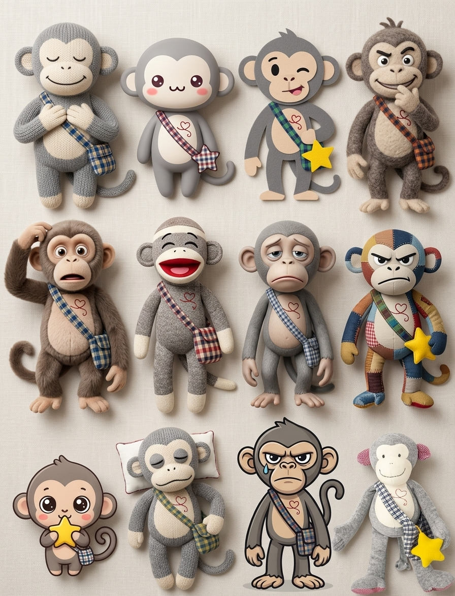

Be 動詞隊
am / is / are
描述狀態、身份、位置或形容詞。
I am tired.
She is happy.
They are at school.
She is happy.
They are at school.
💡 口訣：I 用 am，單數用 is，多數用 are。
幫香蕉偵探隊分辨 am / is / are 和 do / does！每完成一關，就收集一枚猴子徽章。

描述「狀態、身份、位置、形容詞」找 Be 動詞；把「一般動作句」變否定句或問句時，才加 Do / Does。
am / is / are
描述狀態、身份、位置或形容詞。
💡 口訣：I 用 am，單數用 is，多數用 are。
do / does
把一般動作句變成否定句、問句。
💡 口訣：單數用 does；does 後面的動作動詞要變原形。
| 主詞 | Be 動詞 | 一般動作助動詞 | 例子 |
|---|---|---|---|
| I | am | do | I am ready. / Do I like math? |
| he / she / it | is | does | She is happy. / Does she like math? |
| you / we / they | are | do | They are ready. / Do they like math? |
想先玩哪一關都可以自由挑戰！答錯可以再試，也不會被扣分哦！
完成 8 個關卡後解鎖，題目會每次重新混合，也可以自由回頭挑戰其他關卡！
先完成上面 8 關，猴子隊長就會解鎖大門！